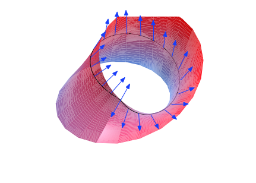

Wolfgang Globke
Office: 02.136
Phone: -
eMail: wolfgang.globke @ univie.ac.at
Universität Wien
Oskar-Morgenstern-Platz 1
1090 Vienna
Austria
Office: 02.136
Phone: -
eMail: wolfgang.globke @ univie.ac.at
Universität Wien
Oskar-Morgenstern-Platz 1
1090 Vienna
Austria
My research is mainly on group actions in differential geometry. Here, I want to introduce some of my current research interests and projects.
A symplectic homogeneous space is a manifold \(M=G/K\), where \(G\) is a Lie transformation group acting on \(M\) furnished with a left-invariant 2-cocycle \(\omega\). The subgroup \(K\) has the Lie algebra \(\mathfrak{k}=\{X\in\mathfrak{g}\mid\omega(X,\cdot)=0\}\), the radical of \(\omega\). So factoring out \(K\) induces a non-degenerate \(G\)-invariant symplectic form on \(M\). In the same way, one defines pseudo-Riemannian homogeneous spaces, but here \(\omega\) is replaced by a left-invariant pseudo-Riemanian metric tensor \(\langle\cdot,\cdot\rangle\) on \(M\).
One of my ongoing research projects is on developing a structure theory for compact pseudo-Riemannian homogeneous spaces with solvable group \(G\). In the Lorentzian case (signature \((n-1,1)\)), such a theory was already developed by Adelghani Zeghib in 1998. His result states that a compact Lorentzian homogeneous space for a solvable group is covered by a fibred product \(G\times_{\mathrm{S}^1} L\) over the circle group \(\mathrm{S}^1\), where \(G\) is an oscillator group and \(L\) a compact Riemannian manifold. I am looking to generalise these results to arbitrary signature.
My joint research with Thomas Leistner is on the geometry of Lorentzian manifolds.
We are particularly interested in those Lorentzian manifolds with special holonomy,
meaning those whose holonomy group is a proper subgroup of the Lorentz group \(\mathrm{SO}_{n-1,1}\).
The holonomy group \(\mathrm{Hol}_p(M)\) of \(M\) at \(p\) is
$$
\mathrm{Hol}_p(M) = \{\tau_\gamma:T_p M\to T_p M \mid \gamma \text{ a loop based at } p\},
$$
where \(\tau_\gamma\) denotes the parallel transport along a curve \(\gamma\).
For different points \(p,q\in M\) it can be seen that
\(\mathrm{Hol}_p(M)\cong\mathrm{Hol}_q(M)\), so we can simply write \(\mathrm{Hol}(M)\).

The image shows the effect of the disconnected holonomy group of the Möbius strip;
when parallel transporting the blue tangent vector along the closed curve, it gets reflected as a consequence of the twist in the Möbius strip.
One of our recent results was on the geometry of homogeneous pp-waves. These are Lorentzian manifolds with a parallel lightlike vector field \(V\) and curvature condition \(\mathrm{R}|_{V^\perp\wedge V^\perp}=0\). They originate from general relativity, where they are idealised models of plane-fronted gravitational waves propagating in the direction of the wave vector \(V\). We proved that every pp-wave whose isometry group acts locally transitively on the leaves corresponding to \(V^\perp\) is in fact a plane wave spacetime. This means the curvature condition is even stronger, \(\nabla_X\mathrm{R}=0\) for all \(X\in V^\perp\). In particular, this holds for homogeneous pp-waves.
A subgroup \(\Gamma\) of the group \(\mathrm{Iso}(\mathbb{R}^n)\) of rigid motions is called a crystallographic group if it is discrete and cocompact. This means the group action has a compact fundamental domain resembling a single cell of a crystal pattern. These groups were described in great detail by Bieberbach in three famous theorems, which state that a crystallographic group is a finite extension of a translation group of \(\mathbb{R}^n\), two crystallographics groups are affinely equivalent if and only if they are isomorphic as abstract groups, and there exist only finitely many affine equivalence classes of crystallogrphic groups. Those crystallographic groups \(\Gamma\) acting freely on \(\mathbb{R}^n\) are precisely the fundamental group of flat Riemannian manifolds.
One can study crystallographic groups in more general settings, for example, as fundamental groups of flat affine manifolds or flat pseudo-Riemannian manifolds. In both cases, a manifold \(M\) is furnished with a torsion-free affine connection \(\nabla\), and in the second case there is a pseudo-Riemannian metric tensor \(\langle\cdot,\cdot\rangle\) on \(M\). Assuming geodesic completeness of \(M\), its universal cover is \(\widetilde{M}=\mathbb{R}^n\), and the fundamental group \(\Gamma\) is assumed to be a subgroup of \(\mathrm{Aff}(\mathbb{R}^n)\), or \(\mathrm{Iso}(\mathbb{R}^n_s)\) in the second case, where \((n-s,s)\) is the metric signature of \(\langle\cdot,\cdot\rangle\).
In these more general settings, the theory is much more complicated and no analogoues to Bieberbach's theorems hold. Therefore, one usually makes additional assumptions on the structure of \(\Gamma\) or \(M\) to exploit the information given by them. As a doctoral student, I studied flat pseudo-Riemannian homogeneous manifolds under the supervision of Oliver Baues in Karlsruhe. This theory was pioneered by Joseph A. Wolf in the 1960s. He showed that the fundamental group of a flat pseudo-Riemannian homogeneous space is 2-step nilpotent (meaning the second commutator \([[\Gamma,\Gamma],\Gamma]\) is the trivial group) and consists of unipotent transformations (\((\gamma-\mathrm{id})^k=0\) for all \(\gamma\in\Gamma\) and \(k\) large enough). In my dissertation, I derived a canonical matrix representation for the holonomy group of a flat pseudo-Riemannian homogeneous manifold \(M\), constructed the first known examples of \(M\) with non-abelian linear holonomy group and gave some sharp dimension estimates for the existence of non-abelian linear holonomy groups.
Let \(\mathcal{D}\) be an open subset of \(\mathbb{R}^n\) and let \(\mathrm{Aff}(\mathcal{D})\) denote the group $$ \mathrm{Aff}(\mathcal{D}) = \mathrm{Diff}(\mathcal{D}) \cap \mathrm{Aff}(\mathbb{R}^n) $$ which is the group of affine transformations of \(\mathbb{R}^n\) leaving \(\mathcal{D}\) invariant. If \(\mathrm{Aff}(\mathcal{D})\) acts transitively on \(\mathcal{D}\), then \(\mathcal{D}\) is called an affine homogeneous domain.
I am interested in studying affine homogeneous domains endowed with a pseudo-Riemannian metric such that the isometry group acts transitively on \(\mathcal{D}\). These domains were first studied by Duncan and Ihrig in the 1990s. They discovered that every such domain with a metric of signature \((n-s,s)\), where \(n-s\geq s\), is a product \(\mathcal{D}=\mathbb{R}\times\mathcal{A}\), where \(\mathcal{A}\) is affine homogeneous domain of dimension \(s\). In signatures \(s=1\) and \(s=2\) they gave a classification of all \(\mathcal{D}\) subject to the condition that \(\mathcal{D}\) is translationally isotropic. This means that the set \(T\) of all translations which move \(\mathcal{D}\) into itself (\(T+\mathcal{D}=\mathcal{D}\)) contains its own orthogongal space: \(T\supseteq T^\perp\). I proved that all domains \(\mathcal{D}\) with abelian linear holonomy group satisfy this property, which strengthened Duncan and Ihrig's result to a full classification in dimension \(s=2\). It is still an open questions whether this also holds for those domains with non-abelian linear holonomy.